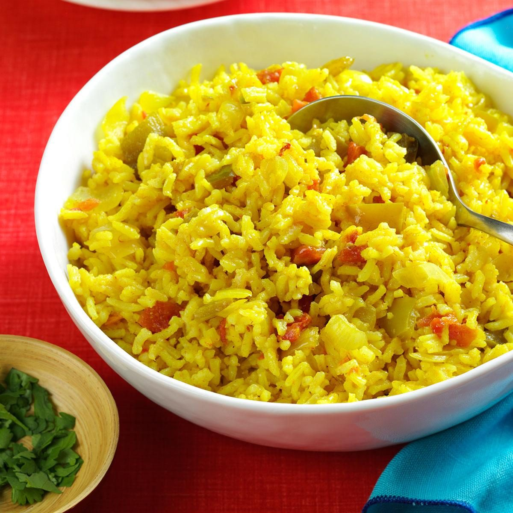

Texas Style
The original version of this recipe was given to me by a Mexican friend, but I've modified the spices to suit my family's tastes.
It's become a favorite at our house—see if it doesn't do the same at yours!
—Melissa Pride, Plano, Texas

Ingredients
- 1/4 cup chopped onion
- 1/4 cup chopped green pepper
- 2 tablespoons canola oil
- 1 cup uncooked long grain rice
- 1/2 cup tomatoes with green chiles
- 1/4 teaspoon ground turmeric
- 1 teaspoon ground cumin
- 1/2 teaspoon salt
- 1/4 teaspoon garlic powder
- 2 cups water
- to 3 tablespoons chopped fresh cilantro, optional
Steps
- In a skillet, saute onion and green pepper in oil for about 2 minutes. Add rice and stir until coated with oil.
Add tomatoes, turmeric, cumin, salt, garlic powder and water; bring to a boil. Reduce heat and simmer, covered, about 20 minutes or until liquid is absorbed.
Add cilantro if desired.